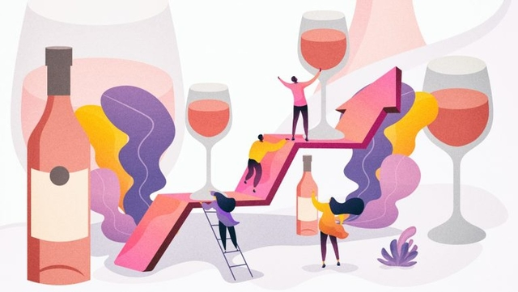

Choose Your Own Adventure

Dogs
- Dogs are intelligent animals and human companions. When you are tired and want to reduce stress, the dog is the animal that can help you get rid of the stress and return to study better. However, there are some things you don't know about your dogs. Explore it now
Homework
- Homework is a gathering place for exercises based on lectures in class. You should follow your homework every day, so you don't miss the deadline.
Food
- During the time of study and entertainment, you should have a healthy diet. A nutritious meal will bring you lots of energy in your daily life.